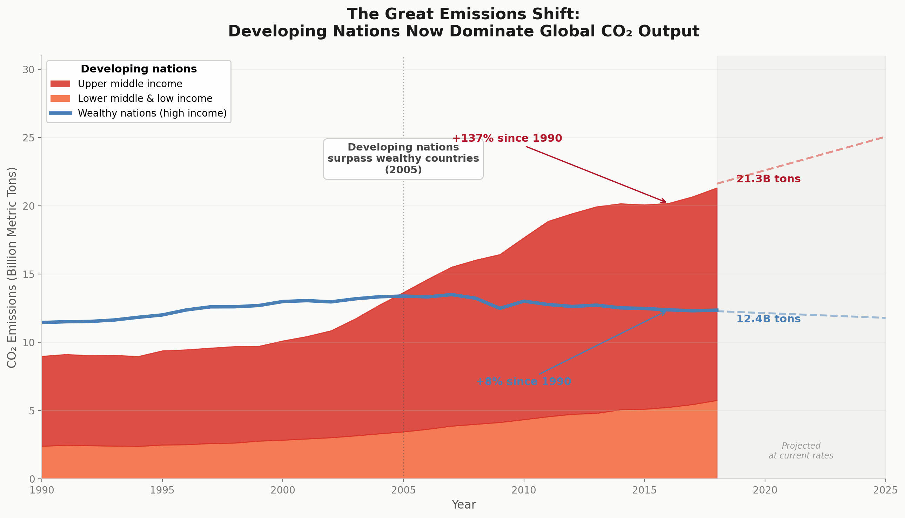
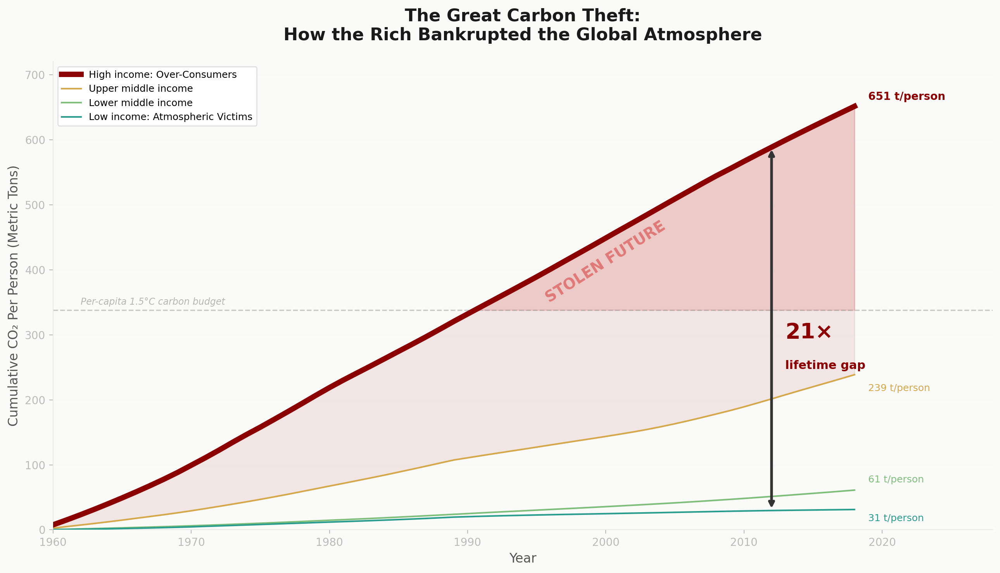

Proposition: Developing nations, not wealthy countries, are now the primary drivers of climate change.
FOR the Proposition

Design Decisions and Rationale:
- Using total emissions instead of per capita (Score: 0.5). I chose to plot absolute total CO2 emissions in billion metric tons rather than per capita emissions. This directs attention to the sheer volume of gas entering the atmosphere right now, which is the physical driver of warming, because it reframes responsibility from individual lifestyle choices to national scale impact. It worked well in making the developing nations block appear massive and dominant. I considered using per capita metrics, but that would have told the opposite story by showing that individual footprints in wealthy nations are still much higher. I settled on totals to maximize the sense of a shifting global power balance.
- Stacking all developing nations into one combined area (Score: -1.5). I aggregated upper middle, lower middle, and low income countries into a single stacked mass plotted against wealthy nations as one line. This groups more than six billion people into one imposing visual block, making the developing world appear unified and overwhelming. The visual mass of the stacked area worked well to dwarf the single wealthy nations line. It creates the impression of a broad and collective surge. However, it hides internal differences, especially the fact that upper middle income countries drive most of the growth. I considered showing four separate lines, but that would have revealed that low income nations contribute very little, which would weaken the narrative of a widespread developing world takeover.
- Timeline starting at 1990 and projected trendline to 2025 (Score: -1). I chose to begin the chart at 1990 and extend it with projected trendlines to 2025. 1990 is a strategic starting point because it is the exact moment when developing nations, specifically China, began their rapid industrial ascent. By cutting out everything before 1990, I hide the decades of prior pollution by wealthy nations. This creates a seemingly fair starting line that is not actually fair because it makes it look like both groups began from a similar place, but the developing nations chose to skyrocket while the wealthy nations stayed responsible. If this chart started in 1960, the blue line for wealthy nations would appear far above the others for most of the graph. I settled on 1990 because it allows the red area to cross over the blue line in 2005, creating a dramatic visual takeover moment that supports the proposition. On the other end, I fit a linear trend to the 2008 to 2018 data and extended it forward with dashed lines. This makes the divergence appear as though it will continue to widen, creating a sense of acceleration. The projected lines do much of the persuasive work visually before the viewer fully processes that they are speculative. While this approach increases urgency, it ignores recent plateaus and shifts toward green energy. Together, the truncated start and speculative end create a window of time that maximizes the FOR argument.
- Growth rate annotations: +137% versus +8% (Score: 1). I calculated these figures directly from the 1990 to 2018 data. Placing these annotations with arrows ensures that the contrast is absorbed immediately. It provides a concise soundbite that is difficult to dispute because it is technically accurate.
- Color palette: warm reds and oranges for developing, cool blue for wealthy (Score: -1.5). I used warm reds and oranges for developing nations to suggest heat, urgency, and danger, while using cool blue for wealthy nations to suggest stability and cooling. This choice subtly frames developing nations as the primary source of concern and wealthy nations as more contained or responsible. The effect works because color associations often operate below conscious awareness. I considered using neutral greys, but that made the chart feel detached and academic. I chose this palette so that the emotional tone would reinforce the FOR argument without relying on additional text.
AGAINST the Proposition

Design Decisions and Rationale:
- Cumulative per capita emissions as the metric (Score: 1.5). I computed the running sum of per capita CO2 emissions from 1960 to 2018 instead of showing annual snapshots. Because CO2 remains in the atmosphere for centuries, the total historical stock each person contributes is more scientifically meaningful than a single year of flow. This approach emphasizes accumulated responsibility over short term change. This transformation shifts the narrative from developing nations catching up to one where the gap structurally widens over time. It worked especially well in showing that wealthy nations added 651 tons per person compared to 31 tons for low income countries. I considered using absolute total cumulative emissions, but that would have shifted attention back to population size and obscured individual responsibility. I chose per capita values to maximize the sense of personal and historical inequality.
- Wording and visual emphasis in axis title and line weight (Score: -2). I deliberately shaped both the language and the visual hierarchy of the graph to frame interpretation. I renamed High income to High income: Over-Consumers and Low income to Low income: Atmospheric Victims, and I titled the visualization "The Great Carbon Theft." Instead of presenting the chart as a neutral comparison of cumulative emissions, this wording places it within a crime narrative and uses terms that imply intent, injustice, and moral blame. At the same time, I made the high income line significantly thicker than the others and minimized the gridlines. This establishes a strong visual hierarchy and immediately draws the viewer's eye to that trajectory. The aesthetic decisions work together with the wording to center one group as the dominant actor in the story. The phrasing introduces explicit judgment before the viewer even processes the data. Even though I retained the formal World Bank income categories within the labels to preserve credibility, the added descriptors carry substantial emotional weight. The chart begins to feel less like a technical report and more like evidence supporting an accusation. The thicker line reinforces this framing visually. It makes the high income trend appear heavier, more imposing, and more consequential, while preventing other lines from competing for attention. I also flipped the color logic from the FOR visualization. I used red for wealthy nations to connote guilt and danger, and I used cool teal and green for developing nations to suggest innocence and nature. I considered keeping both the labels and line weights neutral for a more balanced comparison, but that reduced the clarity and force of the argument.
- The 21x Lifetime Gap Annotation (Score: 1.5). I calculated the exact ratio between the cumulative per capita emissions of the Over-Consumers at 651 tons and the Atmospheric Victims at 31 tons. I then placed a large bold vertical arrow between these two points. This transforms an abstract statistical difference into a visible and measurable gap. Instead of asking the viewer to estimate distance between lines, I quantify it directly and make the contrast explicit. The 21x label anchors the emotional response in something that appears mathematically indisputable. At the same time, the choice to compare these two specific groups is rhetorical, since I selected the extremes to maximize contrast. The annotation distills decades of complex climate data into one number that feels definitive and difficult to challenge. The high contrast black arrow was especially effective because it cuts through the shaded red area and emphasizes the vertical distance. I considered placing the comparison at 1990, but I selected the most recent data point in 2018 so the gap appears at its widest and most dramatic state.
- 1.5 degree carbon budget line with Stolen Future red zone (Score: -1). I added a dashed line at 338 tons per person to represent the per capita carbon budget for staying under 1.5 degrees Celsius of warming, then shaded everything above that line in red and labeled it Stolen Future. The numerical threshold itself is grounded in widely cited climate science, but the visual treatment turns it into a moral boundary rather than just a technical reference point. Although the budget figure is evidence based, the phrase Stolen implies that one group deliberately took more than its fair share of a shared resource. This framing creates a sense of alarm because the high income line does not simply increase, it visibly crosses a ceiling into a marked danger zone. The red shading reinforces that breach and makes the overshoot feel consequential and irreversible. I considered leaving the region unshaded and simply marking the line, but without the red Stolen Future zone the emotional and moral weight of exceeding the budget was much less immediate.
Final Reflection
Creating these two visualizations made it clear to me how the exact same dataset, the same countries, and the same time range can produce completely opposite narratives. In both cases, nothing about the underlying numbers changed. The most straightforward shift was the mathematical transformation. Switching from totals to cumulative per capita values fundamentally changed the perceived size of the problem and who appeared responsible. That single decision redefined whether the chart told a story of emerging threat or entrenched injustice.
What surprised me most was the power of pre-attentive attributes. I flipped the meaning of color between the two charts. In the FOR visualization, I used red for developing nations to signal danger and urgency. In the AGAINST visualization, I used red for wealthy nations to signal guilt and excess. The same color carried opposite moral meaning depending on context. I also used line thickness to create hierarchy, making one group visually dominant before the viewer consciously processed the numbers. It became clear to me that viewers often decide who the villain is before reading a single axis label. I also became more aware of the tradeoff between persuasion and credibility. In the AGAINST version, I intentionally used loaded language such as Over-Consumers and Stolen Future. I knew these phrases increased emotional force, but they also risked being perceived as biased or manipulative. That tension between rhetorical strength and analytical trustworthiness feels central to ethical visualization.
This project helped me clarify ethical boundaries in visualization. Functional transparency means using visual cues like the 21x gap arrow or per capita metrics to highlight real differences, while misleading choices like oversized lines or stacked areas can exaggerate impact beyond the data. I also learned that context matters too. Starting the x-axis in 1960 shows the full history, while cherry-picking 1990 hides prior emissions to support a narrative. Editorial framing, such as the title "The Great Carbon Theft," can guide interpretation without altering the numbers, but distortion occurs when visual geometry misrepresents the data, like truncated axes, turning the chart from persuasion into deception.
I now define ethical analysis and visualization as being transparent about which slice of truth I am choosing to highlight. Every chart emphasizes some aspects of reality and minimizes others. The difference between acceptable persuasion and misleading visualization lies in whether the core data remain intact and interpretable. Highlighting a real cumulative gap is different from distorting scales to fabricate a crisis. For me, the boundary is whether a careful viewer could still recover the underlying reality beneath the rhetorical layer.